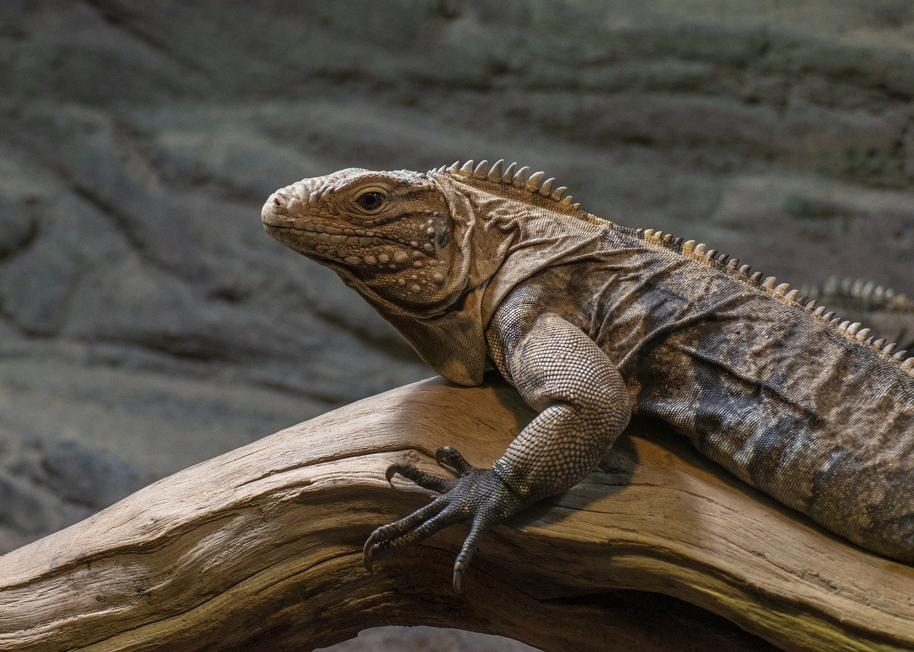
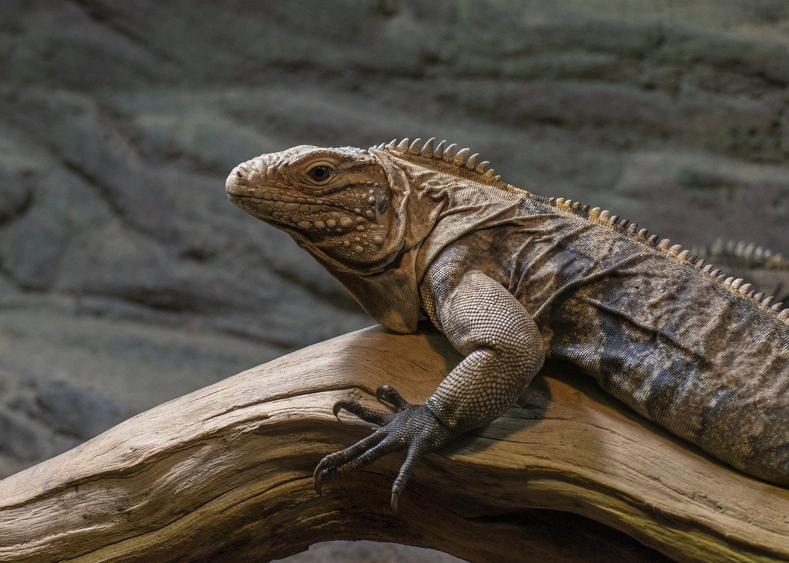
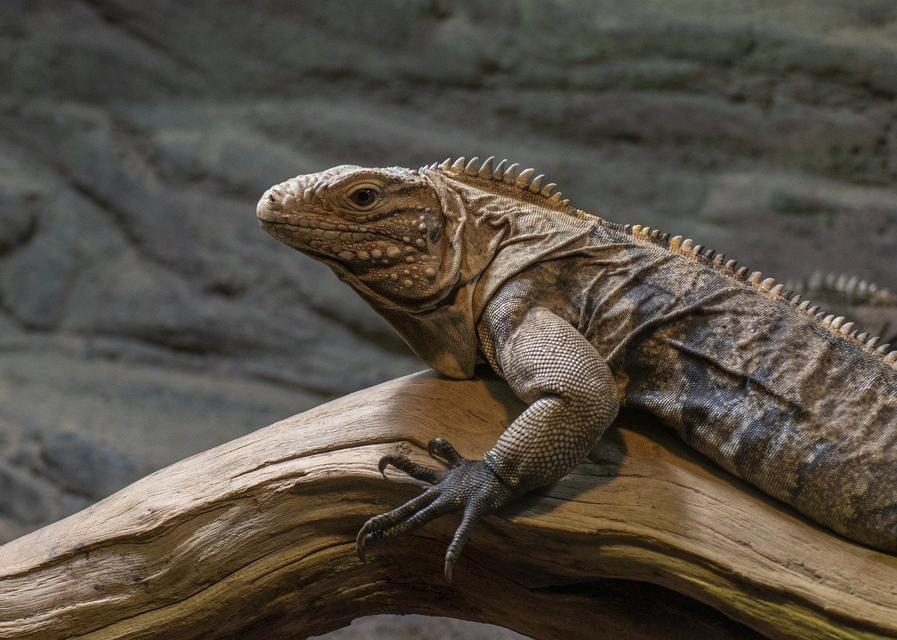

La iguana verde, también conocida como iguana común (Iguana iguana) es una especie de la familia Iguanidae. Es un gran lagarto arbóreo. Mide hasta 2m de longitud de cabeza a cola. Los machos alcanzan entre 30 y 40 cm de longitud hocico-cloaca, las hembras cerca de 10 cm menos que los machos; cola extremadamente larga y algo aplanada lateralmente. Llega a pesar más de 15 kg. Pertenece al grupo mayor y de más complicado diseño de los saurios del Nuevo Mundo, al que pertenecen la mayoría de las especies. Cabeza angosta, hocico redondeado en vista dorsal y truncado en vista lateral; ojos grandes con pupilas verticalmente elípticas; brazos robustos y poderosos con dedos provistos de uñas muy fuertes; pliegue gular conspicuamente grande en machos adultos y con escamas triangulares en bordes dando apariencia de sierra.
son animales diurnos
son buenas nadadoras
son buenas trepando
cambian de color
